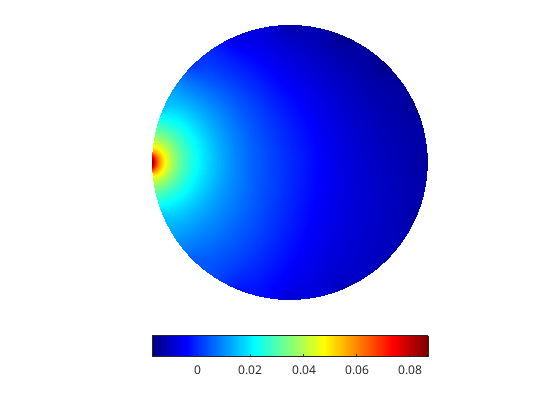
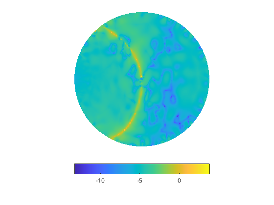
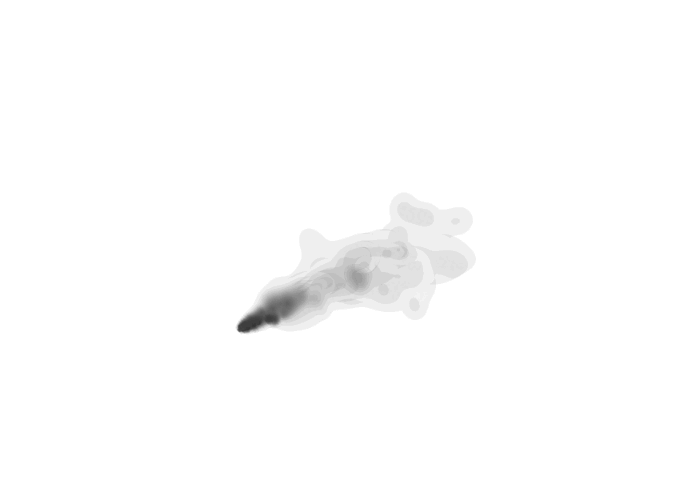
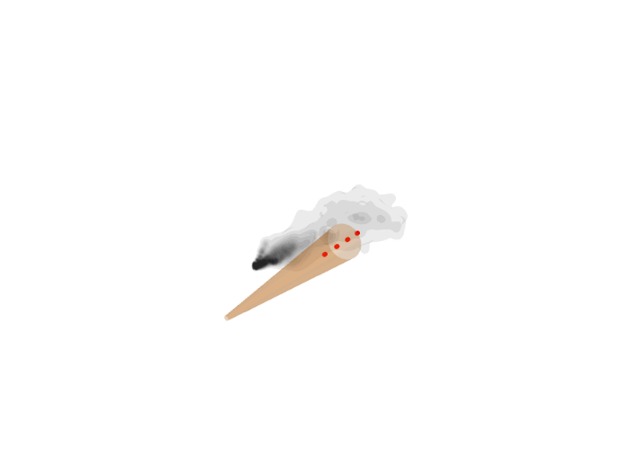
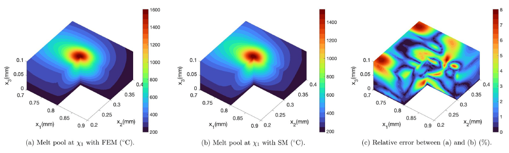
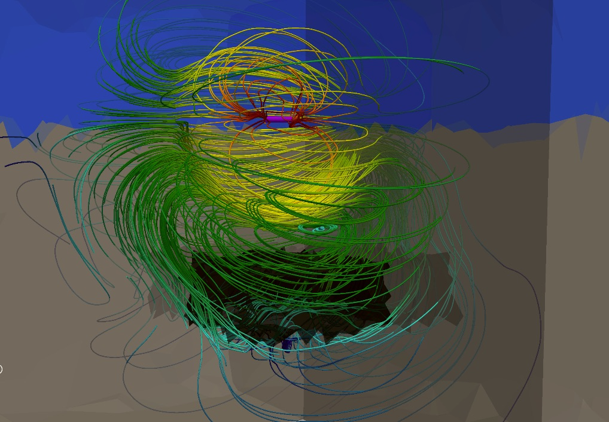
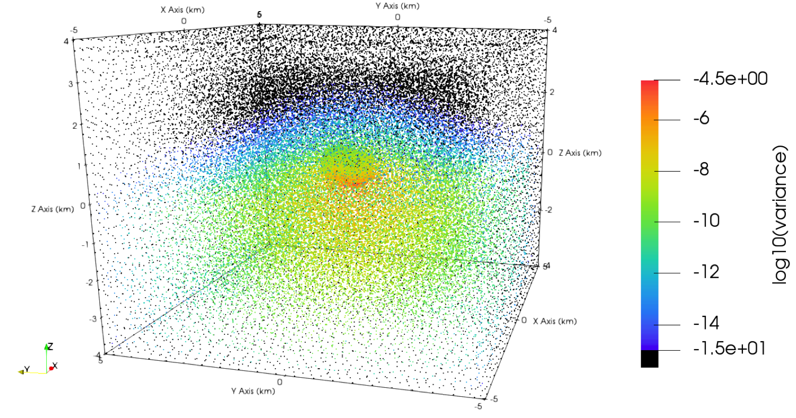

Randomised linear algebra for scientific computing
Randomised algebra for real-time computing at scale addresses the challenges of numerical solution of partial differential equations and their associated inverse problems. This framework offers opportunity for exponential dimensionality reduction at the cost of a moderate loss of computational accuracy. When optimally implemented, randomised algebra yields low dimensional ‘equivalent’ sketches of the computational objects involved, thereby yielding estimated computational results of low statistical error without performing any high-dimensional computations.
 Left, a sketched projected high-dimensional FEM solution of an elliptic equation and to the right the log of its relative error profile. Note the two distinct error features, the yellow crescent that corresponds to the subspace projection error and the random walks corresponding the sketching errors.
{kind=link}
{kind=link}
.
Our efforts in this area are focused on randomising solvers for discretised PDEs in the context of finite element and finite difference time-domain methods, as well as computimng expectations between radom matrices and vectors. Central to this research direction, is the aim of sketching matrices with a prescribed spectrum, e.g. to preserve invertibility or contractive properties, while supressing their variance.
R. Lung, Y. Wu, D. Kamilis and N. Polydorides, "A sketched finite element method for elliptic models", Computer Methods in Applied Mechanics and Engineering, 2020.
Y. Wu and N. Polydorides "A Multilevel Monte Carlo Estimator for Matrix Multiplication", SIAM Scientific Computing 2020.
N. Polydorides, M. Wang, and D. P. Bertsekas, "A Quasi Monte Carlo method for large scale inverse problems" in "Monte Carlo and Quasi-Monte Carlo Methods 2010", by H. Wozniakowski and L. Plaskota (eds), Springer-Verlag.
Atmospheric dispersion imaging with off-beam optical backscatter signals
We are developing a method for fast detection and tomographic imaging of chemicals dispersed in the atmosphere. The method is equipped for imaging gas plumes of interest in near real-time and in 3D, none of which is possible with the current state of the art due to extremely weak signals. Despite the fact that it uses off-the-shelf pulsed sources, a key difference in our approach is the inclusion of wider fields-of-view in the detector which measure light that scattered multiple times. In order to manage the added complexity caused by not knowing the exact trajectories of the measured photons and the need for a radiative transfer model, we exploit properties of turbulent dynamics within atmospheric plumes which impose natural regularity conditions and thereby reduce the dimensionality of the inverse problem. In being able to make use of the light that arrives at the detector from oblique directions, which typically reaches deeper inside the plume and is more strongly affected by the gas of interest, we achieve a more efficient acquisition process especially when the species of interest is hard to detect.
.
{kind=link}
{kind=link}
.
Aside tracking the plume and its concentration the method can trace its origins and future trajectory according to the landscape and wind information while also providing an intuitive representation of the image which eliminates the need for post-processing and analysis of a pixel-based image. For more information see our preprint and the associated slides.
.
Online surrogate models for nonlinear heat transfer in additive manufacturing
This project aims at expediting numerical simulation based on the finite element method so that it becomes practical to use online in the context of additive manufacturing (3D printing). We focus on the computationally demanding non-linear heat transfer equation to simulate the phase transitions (powder, liquid, solid) during a powder bed fusion process. Exploiting the smooth properties of the heat kernel we have been exploring ideas from Gaussian processe emulators, model order reduction and randomised sketching in order to develop surrogates that are low-dimensional and can be used as tools for online analysis, eincluding measuring the dimensions of the melt pool, and the anisotropy of the heat conductivity.
 Left, the computationally expensive FEM simulation of the temperature distribution illustrating the formation of a melt pool within an Aluminum alloy powder, and in the middle the respective surrogate approximation using projection on a small number of Gaussian basis functions. Right, the relative error between the two.
X. Li and N. Polydorides, "Time-efficient surrogate models of thermal modeling in laser powder bed fusion" Elsevier Additive Manufacturing, 2022
Electromagnetic uncertainty probagation
The motivation comes from the Controlled-Source Electromagnetic Method (CSEM) that aims to detect and image hydrocarbon reservoirs by using electromagnetic field measurements to obtain information about the conductivity profile of the sub-seabed. In this context the source of uncertainty stems from our incomplete knowledge on the electrical properties of the underpinning low-frequency electromagnetic model. To estimate the model's response in terms of the induced fields and measurements we use a probabilistic description based on prior information and formulate a forward uncertainty quantification problem of characterizing the uncertainty in the PDE solution and observations in response to that in the parameters. Conversely, inverse uncertainty quantification encompasses the statistical estimation and imaging of the unknown electrical parameters from the available observations, which can be cast as a Bayesian inverse problem. The contributions of the project focus on examining the aforementioned forward and inverse UQ problems for the low-frequency, time-harmonic Maxwell equations, where the model uncertainty emanates from the lack of knowledge of the conductivity parameters.
 A FEM solution depicting the electric field of a dipole source in the CSEM model. Notice the dipole is positioned near the seabed and which includes a conductivity inhomogeneity (in black). Although the fields penetrate to reach the inhomogeneity their magnitude diminishes exponentially away from the source. The graph to the right depicts the variance in the stochastic FEM solution corresponding to a similar source arrangement when the electrical properties of the model are not uniquely specified, e.g. they are modelled as lognormal random fields.
D. Kamilis and N. Polydorides, "Uncertainty Quantification for Low-Frequency, Time-Harmonic Maxwell Equations with Stochastic Conductivity Models" SIAM/ASA Journal on Uncertainty Quantification, 2018
Spectral X-ray tomography: Dictionary learning for spectral unmixing
This project aims to reconstruct 3D images from spectrally resolved X-ray CT (aka Spectral Photon Counting CT) measurements. This new modality applies to biomedical imaging as well as material characterisation and superseds the classical scalar (density) X-ray CT in that, aside the anatomical information it provides, it can also characterise the chemical composition of the imaged body in terms of its attenuation spectrum, thus enabling a simultaneous imaging and domain classification. They key scientific question is how to effectively estimate what materials are included in the domain (this is the ill-posed spectral unmixing problem) by building a suitable dictionary to be used for image reconstruction. We are developing polyenergetic models that capture beam hardening phenomena to model the nonlinear spectral attenuation of X-rays as they propagate through media. For the inverse problem we work to develop deep-learning image reconstruction algorithms that unify reconstruction and classification in a synergistic way to lead to image reconstruction from a small number of spectral projections. Biomedical data from calcified human valves are readily available courtesy of our industrial collaborators MARSBioimaging.
X. Li and N. Polydorides, "Time-efficient surrogate models of thermal modeling in laser powder bed fusion" Elsevier Additive Manufacturing, 2022
D. Kamilis and N. Polydorides, "Uncertainty Quantification for Low-Frequency, Time-Harmonic Maxwell Equations with Stochastic Conductivity Models" SIAM/ASA Journal on Uncertainty Quantification, 2018
D. Kamilis, M. Blatter and N. Polydorides, "Learned Spectral Computed Tomography" ArXiv preprint, 2020.